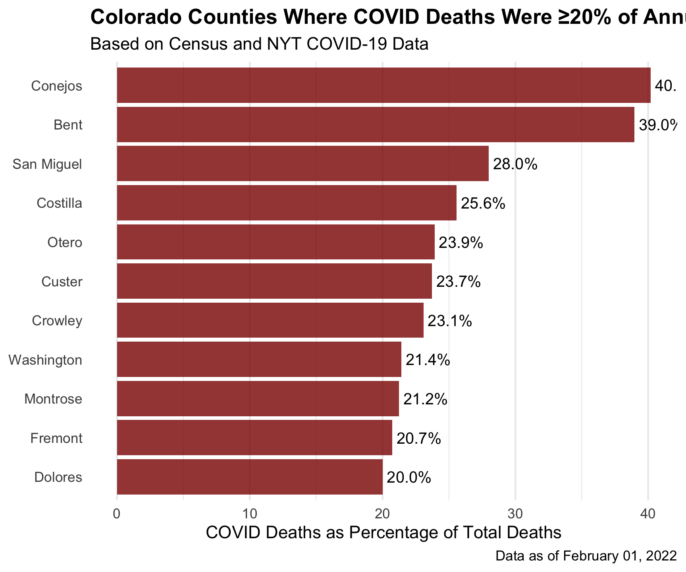
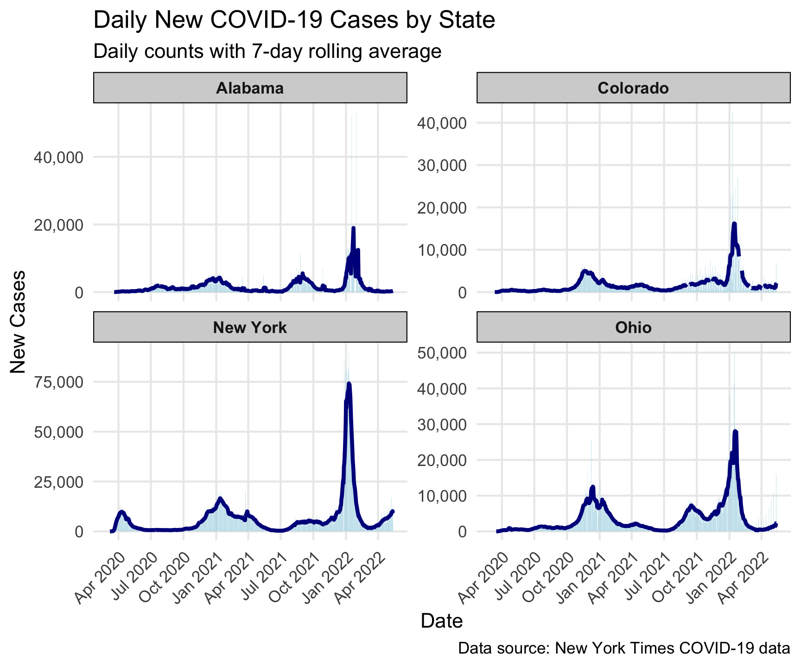
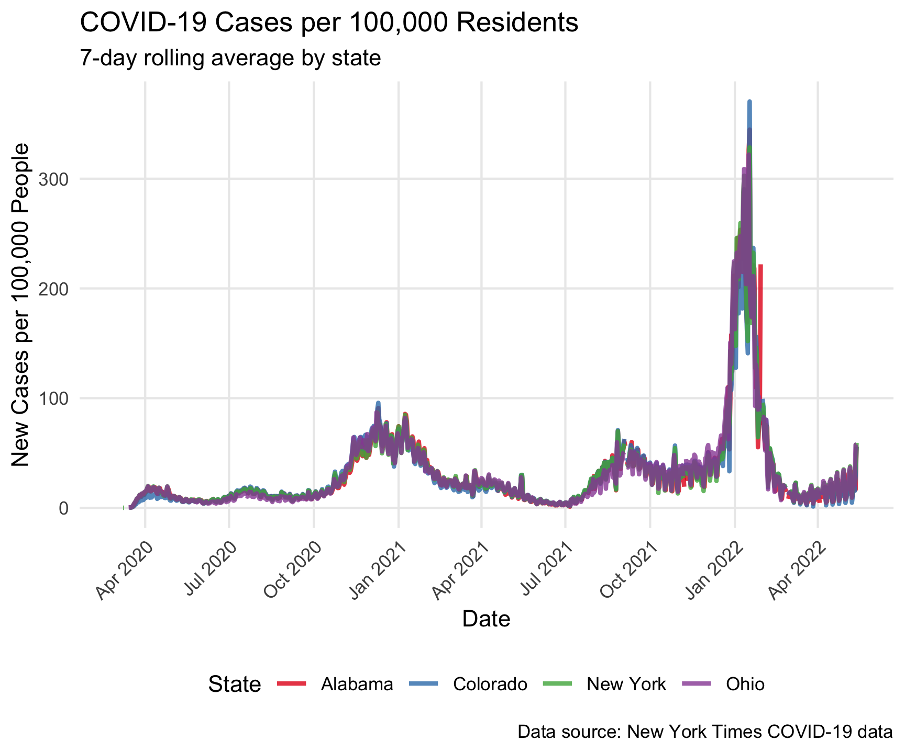
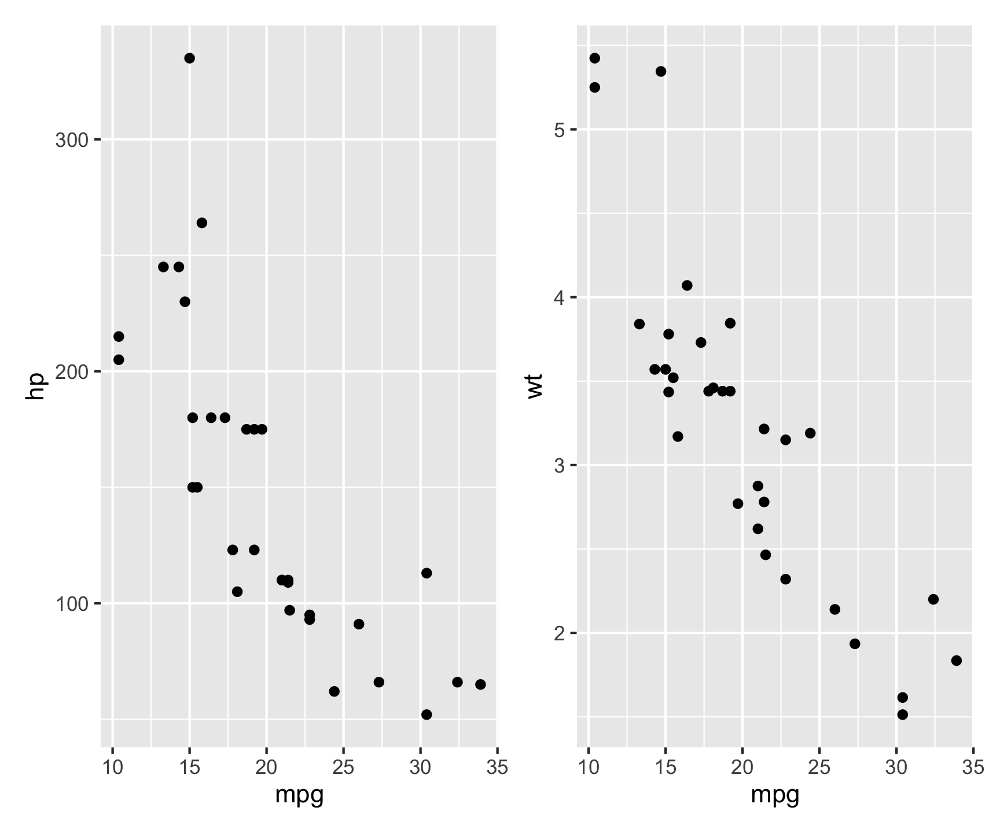
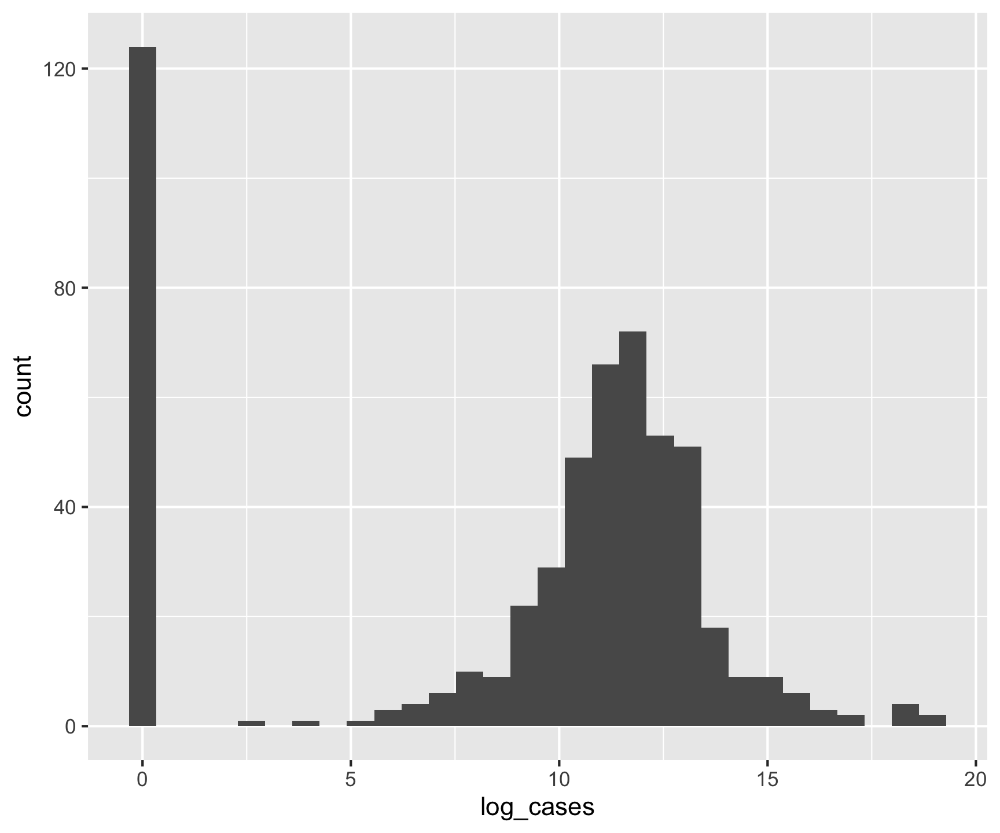
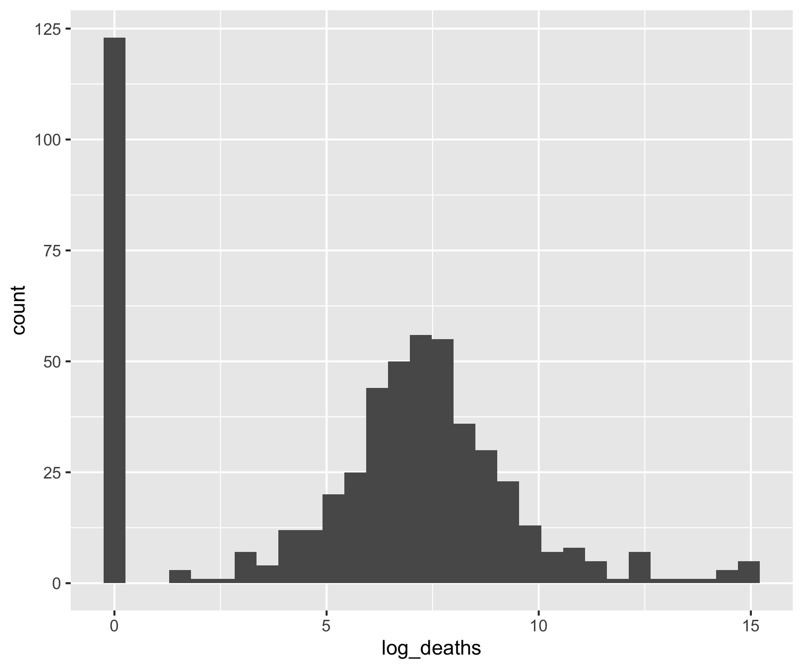
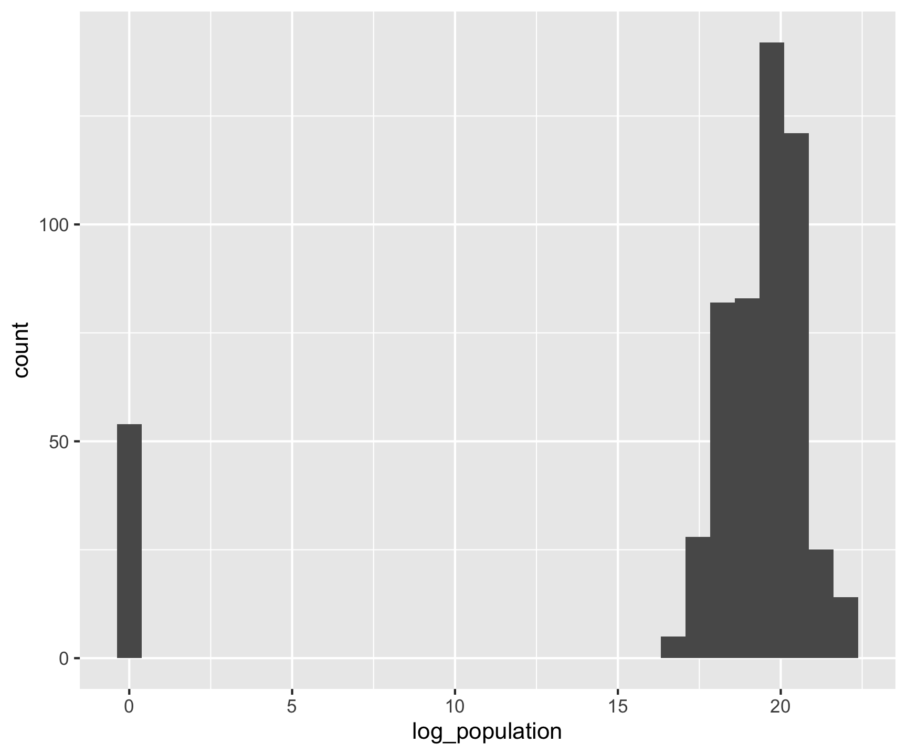
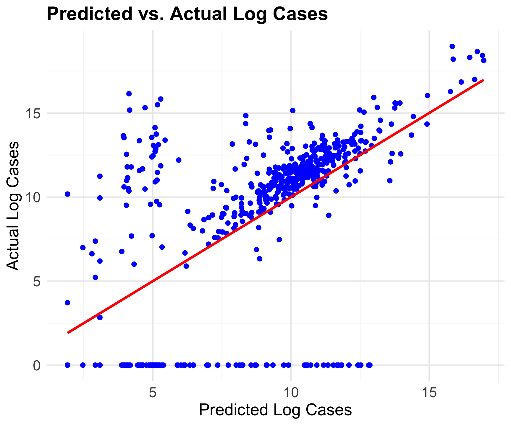
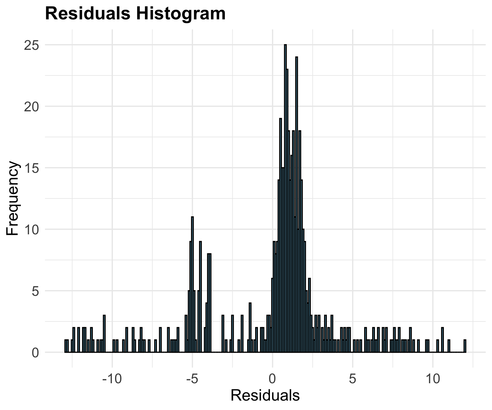

Code
https://raw.githubusercontent.com/nytimes/covid-19-data/master/us-counties.csvPublic Health & Time: COVID Trends
Looking at the README in the NYT repository we read:
“We are providing two sets of data with cumulative counts of coronavirus cases and deaths: one with our most current numbers for each geography and another with historical data showing the tally for each day for each geography … the historical files are the final counts at the end of each day … The historical and live data are released in three files, one for each of these geographic levels: U.S., states and counties.”
For this lab we will use the historic, county level data which is stored as a CSV at this URL:
https://raw.githubusercontent.com/nytimes/covid-19-data/master/us-counties.csvTo start, you should set up a reproducible framework to communicate the following in a way that can be updated every time new data is released (daily):
You should build this analysis so that running it will extract the most current data straight from the NY-Times URL and the state name and date are parameters that can be changed allowing this report to be run for other states/dates.
read_csv (make sure to attach the tidyverse). The data read from Github is considered our “raw data”. Remember to always leave “raw-data-raw” and to generate meaningful subsets as you go.library(tidyverse)
library(flextable)
data <- read_csv('https://raw.githubusercontent.com/nytimes/covid-19-data/master/us-counties.csv')Create an object called my.date and set it as “2022-02-01” - ensure this is a date object.
Create a object called my.state and set it to “Colorado”.
In R, as.Date() is a function used to convert character strings, numeric values, or other date-related objects into Date objects. It ensures that dates are stored in the correct format for date-based calculations and manipulations.
txt <- "2025-02-15"
class(txt)[1] "character"date_example <- as.Date(txt)
class(date_example)[1] "Date"my.date <- as.Date("2022-02-01")
my.state <- "Colorado"filter), and add a new column (mutate) with the daily new cases using diff/lag by county (group_by). Do the same for new deaths. If lag is new to you, lag is a function that shifts a vector by a specified number of positions. The help file can be found with ?lag.(Hint: you will need some combination of filter, group_by, arrange, mutate, diff/lag, and ungroup)
co_data <- data %>%
filter(state == my.state) %>%
group_by(county) %>%
mutate(new_cases = cases - lag(cases, n = 1),
new_deaths = deaths - lag(deaths, n = 1)) %>%
drop_na() %>%
ungroup()my.date object as a proxy for today’s date:Your tables should have clear column names and descriptive captions.
(Hint: Use flextable::flextable() and flextable::set_caption())
today_date <- filter(co_data, date == my.date)
slice_max(today_date, n = 5, order_by = cases) %>%
select(county, cases) %>%
flextable() %>%
set_caption("Top 5 Counties by Cumulative Cases")county | cases |
|---|---|
El Paso | 170,673 |
Denver | 159,022 |
Arapahoe | 144,255 |
Adams | 126,768 |
Jefferson | 113,240 |
slice_max(today_date, n = 5, order_by = new_cases) %>%
select(county, state, new_cases) %>%
flextable() %>%
set_caption("Top 5 Counties by New Cases")county | state | new_cases |
|---|---|---|
El Paso | Colorado | 630 |
Arapahoe | Colorado | 401 |
Denver | Colorado | 389 |
Adams | Colorado | 326 |
Jefferson | Colorado | 291 |
Raw count data can be deceiving given the wide range of populations in Colorado countries. To help us normalize data counts, we need additional information on the population of each county.
Population data is offered by the Census Bureau and can be found here.
pop_url <- 'https://www2.census.gov/programs-surveys/popest/datasets/2020-2023/counties/totals/co-est2023-alldata.csv'How FIPS codes are used
- FIPS codes are used in census products
- FIPS codes are used to identify geographic areas in files
- FIPS codes are used to identify American Indian, Alaska Native, and Native Hawaiian (AIANNH) areas
How FIPS codes are structured
- The number of digits in a FIPS code depends on the level of geography
- State FIPS codes have two digits
- County FIPS codes have five digits, with the first two digits representing the state FIPS code
You notice that the COVID data provides a 5 digit character FIP code representing the state in the first 2 digits and the county in the last 3. In the population data, the STATE and COUNTY FIP identifiers are seperate columns. To make these compatible we need to create a FIP variable that concatinates the 2 digit STATE and the 3 digit COUNTY FIP.
In R, paste() provides a tool for concatenation. paste() can do two things:
sep specifies the character(s) to be used between the arguments to concatenate, orpaste("Hello", "world", sep=" ")[1] "Hello world"collapse specifies the character(s) to be used between the elements of the vector to be collapsed.paste(c("Hello", "world"), collapse="-")[1] "Hello-world"In R, it is so common to want to separate no separator (e.g. paste(“Hello”, “world”, sep=““)) that the short cutpaste0` exists:
paste("Hello", "world", sep = "")[1] "Helloworld"paste0("Hello", "world")[1] "Helloworld"?dplyr::select). Additionally, remove all state level rows (e.g. COUNTY FIP == “000”)cd <- read_csv(pop_url) %>%
filter(COUNTY != "000") %>%
mutate(fips = paste0(STATE, COUNTY)) %>%
select(STNAME, COUNTY, fips, contains("2021"))
joined_data <- inner_join(co_data, cd, by = ("fips")) %>%
glimpse()Rows: 49,399
Columns: 26
$ date <date> 2020-03-06, 2020-03-06, 2020-03-07, 2020-03-07,…
$ county <chr> "Douglas", "Jefferson", "Denver", "Douglas", "Ea…
$ state <chr> "Colorado", "Colorado", "Colorado", "Colorado", …
$ fips <chr> "08035", "08059", "08031", "08035", "08037", "08…
$ cases <dbl> 3, 1, 2, 3, 1, 1, 1, 2, 3, 1, 1, 1, 3, 3, 2, 1, …
$ deaths <dbl> 0, 0, 0, 0, 0, 0, 0, 0, 0, 0, 0, 0, 0, 0, 0, 0, …
$ new_cases <dbl> 2, 0, 0, 0, 0, 0, 0, 0, 0, 0, 0, 0, 1, 0, 1, 0, …
$ new_deaths <dbl> 0, 0, 0, 0, 0, 0, 0, 0, 0, 0, 0, 0, 0, 0, 0, 0, …
$ STNAME <chr> "Colorado", "Colorado", "Colorado", "Colorado", …
$ COUNTY <chr> "035", "059", "031", "035", "037", "041", "059",…
$ POPESTIMATE2021 <dbl> 369783, 580703, 711467, 369783, 55774, 737287, 5…
$ NPOPCHG2021 <dbl> 9460, -2378, -6139, 9460, 117, 4903, -2378, -613…
$ BIRTHS2021 <dbl> 3529, 5396, 8580, 3529, 518, 9301, 5396, 8580, 3…
$ DEATHS2021 <dbl> 1899, 5402, 5138, 1899, 170, 5877, 5402, 5138, 1…
$ NATURALCHG2021 <dbl> 1630, -6, 3442, 1630, 348, 3424, -6, 3442, 1630,…
$ INTERNATIONALMIG2021 <dbl> 248, 225, 703, 248, 38, 53, 225, 703, 248, 38, 5…
$ DOMESTICMIG2021 <dbl> 7759, -2960, -10331, 7759, -303, 911, -2960, -10…
$ NETMIG2021 <dbl> 8007, -2735, -9628, 8007, -265, 964, -2735, -962…
$ RESIDUAL2021 <dbl> -177, 363, 47, -177, 34, 515, 363, 47, -177, 34,…
$ GQESTIMATES2021 <dbl> 1608, 9147, 13955, 1608, 99, 18304, 9147, 13955,…
$ RBIRTH2021 <dbl> 9.667089, 9.273198, 12.007784, 9.667089, 9.29723…
$ RDEATH2021 <dbl> 5.201984, 9.283510, 7.190675, 5.201984, 3.051216…
$ RNATURALCHG2021 <dbl> 4.46510507, -0.01031119, 4.81710871, 4.46510507,…
$ RINTERNATIONALMIG2021 <dbl> 0.67935341, 0.38666969, 0.98385457, 0.67935341, …
$ RDOMESTICMIG2021 <dbl> 21.254448, -5.086855, -14.458324, 21.254448, -5.…
$ RNETMIG2021 <dbl> 21.933801, -4.700185, -13.474469, 21.933801, -4.…(Hint: names(), dim(), nrow(), str(), glimpse(), skimr,…))
names(joined_data) [1] "date" "county" "state"
[4] "fips" "cases" "deaths"
[7] "new_cases" "new_deaths" "STNAME"
[10] "COUNTY" "POPESTIMATE2021" "NPOPCHG2021"
[13] "BIRTHS2021" "DEATHS2021" "NATURALCHG2021"
[16] "INTERNATIONALMIG2021" "DOMESTICMIG2021" "NETMIG2021"
[19] "RESIDUAL2021" "GQESTIMATES2021" "RBIRTH2021"
[22] "RDEATH2021" "RNATURALCHG2021" "RINTERNATIONALMIG2021"
[25] "RDOMESTICMIG2021" "RNETMIG2021" dim(joined_data)[1] 49399 26nrow(joined_data)[1] 49399str(joined_data)tibble [49,399 × 26] (S3: tbl_df/tbl/data.frame)
$ date : Date[1:49399], format: "2020-03-06" "2020-03-06" ...
$ county : chr [1:49399] "Douglas" "Jefferson" "Denver" "Douglas" ...
$ state : chr [1:49399] "Colorado" "Colorado" "Colorado" "Colorado" ...
$ fips : chr [1:49399] "08035" "08059" "08031" "08035" ...
$ cases : num [1:49399] 3 1 2 3 1 1 1 2 3 1 ...
$ deaths : num [1:49399] 0 0 0 0 0 0 0 0 0 0 ...
$ new_cases : num [1:49399] 2 0 0 0 0 0 0 0 0 0 ...
$ new_deaths : num [1:49399] 0 0 0 0 0 0 0 0 0 0 ...
$ STNAME : chr [1:49399] "Colorado" "Colorado" "Colorado" "Colorado" ...
$ COUNTY : chr [1:49399] "035" "059" "031" "035" ...
$ POPESTIMATE2021 : num [1:49399] 369783 580703 711467 369783 55774 ...
$ NPOPCHG2021 : num [1:49399] 9460 -2378 -6139 9460 117 ...
$ BIRTHS2021 : num [1:49399] 3529 5396 8580 3529 518 ...
$ DEATHS2021 : num [1:49399] 1899 5402 5138 1899 170 ...
$ NATURALCHG2021 : num [1:49399] 1630 -6 3442 1630 348 ...
$ INTERNATIONALMIG2021 : num [1:49399] 248 225 703 248 38 53 225 703 248 38 ...
$ DOMESTICMIG2021 : num [1:49399] 7759 -2960 -10331 7759 -303 ...
$ NETMIG2021 : num [1:49399] 8007 -2735 -9628 8007 -265 ...
$ RESIDUAL2021 : num [1:49399] -177 363 47 -177 34 515 363 47 -177 34 ...
$ GQESTIMATES2021 : num [1:49399] 1608 9147 13955 1608 99 ...
$ RBIRTH2021 : num [1:49399] 9.67 9.27 12.01 9.67 9.3 ...
$ RDEATH2021 : num [1:49399] 5.2 9.28 7.19 5.2 3.05 ...
$ RNATURALCHG2021 : num [1:49399] 4.4651 -0.0103 4.8171 4.4651 6.246 ...
$ RINTERNATIONALMIG2021: num [1:49399] 0.679 0.387 0.984 0.679 0.682 ...
$ RDOMESTICMIG2021 : num [1:49399] 21.25 -5.09 -14.46 21.25 -5.44 ...
$ RNETMIG2021 : num [1:49399] 21.93 -4.7 -13.47 21.93 -4.76 ...glimpse(joined_data)Rows: 49,399
Columns: 26
$ date <date> 2020-03-06, 2020-03-06, 2020-03-07, 2020-03-07,…
$ county <chr> "Douglas", "Jefferson", "Denver", "Douglas", "Ea…
$ state <chr> "Colorado", "Colorado", "Colorado", "Colorado", …
$ fips <chr> "08035", "08059", "08031", "08035", "08037", "08…
$ cases <dbl> 3, 1, 2, 3, 1, 1, 1, 2, 3, 1, 1, 1, 3, 3, 2, 1, …
$ deaths <dbl> 0, 0, 0, 0, 0, 0, 0, 0, 0, 0, 0, 0, 0, 0, 0, 0, …
$ new_cases <dbl> 2, 0, 0, 0, 0, 0, 0, 0, 0, 0, 0, 0, 1, 0, 1, 0, …
$ new_deaths <dbl> 0, 0, 0, 0, 0, 0, 0, 0, 0, 0, 0, 0, 0, 0, 0, 0, …
$ STNAME <chr> "Colorado", "Colorado", "Colorado", "Colorado", …
$ COUNTY <chr> "035", "059", "031", "035", "037", "041", "059",…
$ POPESTIMATE2021 <dbl> 369783, 580703, 711467, 369783, 55774, 737287, 5…
$ NPOPCHG2021 <dbl> 9460, -2378, -6139, 9460, 117, 4903, -2378, -613…
$ BIRTHS2021 <dbl> 3529, 5396, 8580, 3529, 518, 9301, 5396, 8580, 3…
$ DEATHS2021 <dbl> 1899, 5402, 5138, 1899, 170, 5877, 5402, 5138, 1…
$ NATURALCHG2021 <dbl> 1630, -6, 3442, 1630, 348, 3424, -6, 3442, 1630,…
$ INTERNATIONALMIG2021 <dbl> 248, 225, 703, 248, 38, 53, 225, 703, 248, 38, 5…
$ DOMESTICMIG2021 <dbl> 7759, -2960, -10331, 7759, -303, 911, -2960, -10…
$ NETMIG2021 <dbl> 8007, -2735, -9628, 8007, -265, 964, -2735, -962…
$ RESIDUAL2021 <dbl> -177, 363, 47, -177, 34, 515, 363, 47, -177, 34,…
$ GQESTIMATES2021 <dbl> 1608, 9147, 13955, 1608, 99, 18304, 9147, 13955,…
$ RBIRTH2021 <dbl> 9.667089, 9.273198, 12.007784, 9.667089, 9.29723…
$ RDEATH2021 <dbl> 5.201984, 9.283510, 7.190675, 5.201984, 3.051216…
$ RNATURALCHG2021 <dbl> 4.46510507, -0.01031119, 4.81710871, 4.46510507,…
$ RINTERNATIONALMIG2021 <dbl> 0.67935341, 0.38666969, 0.98385457, 0.67935341, …
$ RDOMESTICMIG2021 <dbl> 21.254448, -5.086855, -14.458324, 21.254448, -5.…
$ RNETMIG2021 <dbl> 21.933801, -4.700185, -13.474469, 21.933801, -4.…## Based on some exploratory data structure analysis of this updated data set it is found that, after manipulation, this data frame has 26 columns and 49399 rows. Each column has its own unique name except for some overlap with the state name columns after joining the two data sets by the fips code column. Join the population data to the Colorado COVID data and compute the per capita cumulative cases, per capita new cases, and per capita new deaths:
joined_data <- joined_data %>%
mutate(
percap_cases = cases / `POPESTIMATE2021`,
percap_new_cases = new_cases / `POPESTIMATE2021`,
percap_new_deaths = new_deaths / `POPESTIMATE2021`
)Generate (2) new tables. The first should show the 5 counties with the most cumulative cases per capita on your date, and the second should show the 5 counties with the most NEW cases per capita on the same date. Your tables should have clear column names and descriptive captions.
(Hint: Use `flextable::flextable() and flextable::set_caption())
today_date <- filter(joined_data, date == my.date)
slice_max(today_date, n = 5, order_by = percap_cases) %>%
select(county, percap_cases) %>%
flextable() %>%
set_caption("Top 5 Counties by Per Capita Cumulative Cases") %>%
set_header_labels(
county = "County",
percap_cases = "Cases Per Capita"
)County | Cases Per Capita |
|---|---|
Crowley | 0.5117698 |
Bent | 0.4118749 |
Pitkin | 0.3429659 |
Lincoln | 0.3424082 |
Logan | 0.3047701 |
slice_max(today_date, n = 5, order_by = percap_new_cases) %>%
select(county, percap_new_cases) %>%
flextable() %>%
set_caption("Top 5 Counties by Per Capita New Cases") %>%
set_header_labels(
county = "County",
percap_new_cases = "New Cases Per Capita"
)County | New Cases Per Capita |
|---|---|
Crowley | 0.009764603 |
Bent | 0.004120622 |
Sedgwick | 0.003869304 |
Washington | 0.002875924 |
Las Animas | 0.002651039 |
Filter the merged COVID/Population data for Colorado to only include the last 14 days. Remember this should be a programmatic request and not hard-coded.
Then, use the group_by/summarize paradigm to determine the total number of new cases in the last 14 days per 100,000 people.
Print a table of the top 5 counties (consider slice_max), and, report the number of counties that meet the watch list condition: “More than 100 new cases per 100,000 residents over the past 14 days…”
(Hint: Dates are numeric in R and thus operations like max min, -, +, >, and< work.)
last_14_days <- joined_data %>%
filter(date >= (my.date - 14) & date <= my.date)
rolling_summary <- last_14_days %>%
group_by(county) %>%
arrange(date) %>%
mutate(
roll_avg_new_cases = rollmean(new_cases, k = 14, fill = NA, align = "right"),
roll_avg_new_deaths = rollmean(new_deaths, k = 14, fill = NA, align = "right")
) %>%
ungroup()
top_cases <- rolling_summary %>%
filter(!is.na(roll_avg_new_cases)) %>%
group_by(county) %>%
arrange(desc(date)) %>%
summarise(roll_avg_new_cases = last(roll_avg_new_cases), .groups = "drop") %>%
slice_max(n = 5, order_by = roll_avg_new_cases)
top_deaths <- rolling_summary %>%
filter(!is.na(roll_avg_new_deaths)) %>%
group_by(county) %>%
arrange(desc(date)) %>%
summarise(roll_avg_new_deaths = last(roll_avg_new_deaths), .groups = "drop") %>%
slice_max(n = 5, order_by = roll_avg_new_deaths)
top_cases %>%
flextable() %>%
set_caption("Top 5 Counties by 14-Day Rolling Average of New Cases") %>%
set_header_labels(
county = "County",
roll_avg_new_cases = "14-Day Avg New Cases"
)County | 14-Day Avg New Cases |
|---|---|
El Paso | 1,254.5000 |
Arapahoe | 952.5714 |
Denver | 900.2143 |
Jefferson | 781.7857 |
Adams | 772.0000 |
top_deaths %>%
flextable() %>%
set_caption("Top 5 Counties by 14-Day Rolling Average of New Deaths") %>%
set_header_labels(
county = "County",
roll_avg_new_deaths = "14-Day Avg New Deaths"
)County | 14-Day Avg New Deaths |
|---|---|
Adams | 5.571429 |
Jefferson | 4.928571 |
Denver | 4.142857 |
Arapahoe | 3.857143 |
El Paso | 3.714286 |
Given we are assuming it is February 1st, 2022. Your leadership has now asked you to determine what percentage of deaths in each county were attributed to COVID last year (2021). You eagerly tell them that with the current Census data, you can do this!
From previous questions you should have a data.frame with daily COVID deaths in Colorado and the Census based, 2021 total deaths. For this question, you will find the ratio of total COVID deaths per county (2021) of all recorded deaths. In a plot of your choosing, visualize all counties where COVID deaths account for 20% or more of the annual death toll.
To extract a element of a date object in R, the lubridate package (part of tidyverse) is very helpful:
tmp.date = as.Date("2025-02-15")
lubridate::year(tmp.date)[1] 2025lubridate::month(tmp.date)[1] 2lubridate::yday(tmp.date)[1] 46library(ggplot2)
covid_2021 <- joined_data %>%
filter(year(date) == 2021)
county_covid_deaths <- covid_2021 %>%
group_by(county) %>%
summarize(
total_covid_deaths = sum(new_deaths, na.rm = TRUE),
population = first(POPESTIMATE2021),
total_annual_deaths = first(DEATHS2021)
)
death_analysis <- county_covid_deaths %>%
mutate(
covid_death_ratio = total_covid_deaths / total_annual_deaths,
covid_death_percentage = covid_death_ratio * 100
) %>%
filter(covid_death_percentage >= 20) %>%
arrange(desc(covid_death_percentage))visualization
ggplot(death_analysis, aes(x = reorder(county, covid_death_percentage), y = covid_death_percentage)) +
geom_col(fill = "darkred", alpha = 0.8) +
geom_text(aes(label = sprintf("%.1f%%", covid_death_percentage)),
hjust = -0.1, size = 3.5) +
coord_flip() +
labs(
title = "Colorado Counties Where COVID Deaths Were ≥20% of Annual Deaths (2021)",
subtitle = "Based on Census and NYT COVID-19 Data",
x = NULL,
y = "COVID Deaths as Percentage of Total Deaths",
caption = paste("Data as of", format(as.Date("2022-02-01"), "%B %d, %Y"))
) +
theme_minimal() +
theme(
plot.title = element_text(face = "bold"),
panel.grid.major.y = element_blank()
)
Congratulations! You have been promoted to the National COVID-19 Task Force.As part of this exercise, you have been tasked with building analysis to compare states to each other.
In this question, we are going to look at the story of 4 states and the impact scale can have on data interpretation. The states include: New York, Colorado, Alabama, and Ohio.
Your task is to make a faceted bar plot showing the number of daily, new cases at the state level.
group/summarize our county level data to the state level, filter it to the four states of interest, and calculate the number of daily new cases (diff/lag) and the 7-day rolling mean.The rollmean function from the zoo package in R is used to compute the rolling (moving) mean of a numeric vector, matrix, or zoo/ts object.
rollmean(x, k, fill = NA, align = "center", na.pad = FALSE)
- x: Numeric vector, matrix, or time series.
- k: Window size (number of observations).
- fill: Values to pad missing results (default NA).
- align: Position of the rolling window (“center”, “left”, “right”).
- na.pad: If TRUE, pads missing values with NA.
align = "center" by default, values at the start and end are dropped.library(zoo)
# Sample data
x <- c(1, 2, 3, 4, 5, 6, 7, 8, 9, 10)
# Rolling mean with a window size of 3
rollmean(x, k = 3)[1] 2 3 4 5 6 7 8 9rollmean(x, k = 3, fill = NA) [1] NA 2 3 4 5 6 7 8 9 NArollmean(x, k = 3, fill = NA, align = "left") [1] 2 3 4 5 6 7 8 9 NA NArollmean(x, k = 3, fill = NA, align = "right") [1] NA NA 2 3 4 5 6 7 8 9Hint: You will need two group_by calls and the zoo::rollmean function.
states_of_interest <- c("New York", "Colorado", "Alabama", "Ohio")
state_data <- data %>%
group_by(state, date) %>%
summarize(
total_cases = sum(cases),
total_deaths = sum(deaths),
.groups = "drop"
) %>%
filter(state %in% states_of_interest) %>%
group_by(state) %>%
arrange(date) %>%
mutate(
new_cases = total_cases - lag(total_cases, 1),
new_cases = ifelse(new_cases < 0, NA, new_cases)
) %>%
mutate(
rolling_avg_cases = rollmean(new_cases, k = 7, fill = NA, align = "right")
) %>%
ungroup()library(scales)
ggplot(state_data, aes(x = date)) +
# Use columns for daily counts
geom_col(aes(y = new_cases), fill = "lightblue", alpha = 0.6) +
# Use lines for the rolling average (using linewidth instead of size)
geom_line(aes(y = rolling_avg_cases), color = "darkblue", linewidth = 1) +
# Create separate panels for each state
facet_wrap(~state, scales = "free_y") +
labs(
title = "Daily New COVID-19 Cases by State",
subtitle = "Daily counts with 7-day rolling average",
x = "Date",
y = "New Cases",
caption = "Data source: New York Times COVID-19 data"
) +
theme_minimal() +
theme(
strip.background = element_rect(fill = "lightgray"),
strip.text = element_text(face = "bold"),
panel.grid.minor = element_blank(),
axis.text.x = element_text(angle = 45, hjust = 1)
) +
scale_x_date(date_breaks = "3 months", date_labels = "%b %Y") +
scale_y_continuous(labels = scales::comma)
Hint: You may need to modify the columns you kept in your original population data. Be creative with how you join data (inner vs outer vs full)!
state_pop <- cd %>%
group_by(STNAME) %>%
summarize(state_population = sum(POPESTIMATE2021)) %>%
rename(state = STNAME)
state_percapita <- state_data %>%
inner_join(state_pop, by = "state") %>%
mutate(
new_cases_percapita = new_cases / state_population * 100000, # per 100,000 people
rolling_avg_percapita = rollmean(new_cases_percapita, k = 7, fill = NA, align = "right")
)ggplot(state_percapita, aes(x = date, y = rolling_avg_percapita, color = state)) +
geom_line(linewidth = 1, alpha = 0.8) +
labs(
title = "COVID-19 Cases per 100,000 Residents",
subtitle = "7-day rolling average by state",
x = "Date",
y = "New Cases per 100,000 People",
color = "State",
caption = "Data source: New York Times COVID-19 data"
) +
theme_minimal() +
theme(
legend.position = "bottom",
panel.grid.minor = element_blank(),
axis.text.x = element_text(angle = 45, hjust = 1)
) +
scale_x_date(date_breaks = "3 months", date_labels = "%b %Y") +
scale_color_brewer(palette = "Set1")
…
You’ve now been tasked with understanding how COVID has spread through time across the country. You will do this by calculating the Weighted Mean Center of the COVID-19 outbreak to better understand the movement of the virus through time.
To do this, we need to join the COVID data with location information. I have staged the latitude and longitude of county centers here. For reference, this data was processed like this:
counties = USAboundaries::us_counties() %>%
dplyr::select(fips = geoid) %>%
sf::st_centroid() %>%
dplyr::mutate(LON = sf::st_coordinates(.)[,1],
LAT = sf::st_coordinates(.)[,2]) %>%
sf::st_drop_geometry()
write.csv(counties, "../resources/county-centroids.csv", row.names = FALSE)Please read in the data (readr::read_csv()); and join it to your raw COVID-19 data using the fips attributes using the following URL:
'https://raw.githubusercontent.com/mikejohnson51/csu-ess-330/refs/heads/main/resources/county-centroids.csv'[1] "https://raw.githubusercontent.com/mikejohnson51/csu-ess-330/refs/heads/main/resources/county-centroids.csv"\[X_{coord} = \sum{(X_{i} * w_{i})} / \sum(w_{i})\] \[Y_{coord} = \sum{(Y_{i} * w_{i})}/ \sum(w_{i})\]
library(patchwork)
library(maps)
centroids <- read_csv("https://raw.githubusercontent.com/mikejohnson51/csu-ess-330/refs/heads/main/resources/county-centroids.csv")
covid_joined <- data %>%
left_join(centroids, by = "fips")
weighted_centers <- covid_joined %>%
group_by(date) %>%
summarize(
X_cases = sum(LON * cases, na.rm = TRUE) / sum(cases, na.rm = TRUE),
Y_cases = sum(LAT * cases, na.rm = TRUE) / sum(cases, na.rm = TRUE),
X_deaths = sum(LON * deaths, na.rm = TRUE) / sum(deaths, na.rm = TRUE),
Y_deaths = sum(LAT * deaths, na.rm = TRUE) / sum(deaths, na.rm = TRUE)
) %>%
drop_na()Make two plots next to each other (using patchwork) showing cases in navy and deaths in red. Once complete, describe the differences in the plots and what they mean about the spatial patterns seen with COVID impacts. These points should be plotted over a map of the USA states which can be added to a ggplot object with:
borders("state", fill = "gray90", colour = "white")(feel free to modify fill and colour (must be colour (see documentation)))
patchwork is an R package designed for combining multiple ggplot2 plots into a cohesive layout.
library(patchwork)
p1 <- ggplot(mtcars, aes(mpg, hp)) + geom_point()
p2 <- ggplot(mtcars, aes(mpg, wt)) + geom_point()
p1 | p2 # Arrange side by side
This places p1 and p2 next to each other in a single figure.
usa_map <- borders("state", fill = "gray90", colour = "white")
p_cases <- ggplot(weighted_centers, aes(X_cases, Y_cases)) +
usa_map +
geom_path(color = "navy") +
geom_point(color = "navy", size = 2) +
labs(title = "Weighted Mean Center of COVID-19 Cases",
x = "Longitude", y = "Latitude") +
theme_minimal()
p_deaths <- ggplot(weighted_centers, aes(X_deaths, Y_deaths)) +
usa_map +
geom_path(color = "red") +
geom_point(color = "red", size = 2) +
labs(title = "Weighted Mean Center of COVID-19 Deaths",
x = "Longitude", y = "Latitude") +
theme_minimal()
p_cases | p_deaths
OK! This is a job well done. As your final task, your leadership has noticed that it is much easier to have a solid record of deaths, while a record of cases relies on testing protocols and availability. They ask you to explore the relationship between cases and deaths to see if deaths can be used as a proxy for cases. You will explore the relationship between cases and deaths along with other predictors of your chosing from the population data.
Let’s start with the raw COVID dataset, and compute county level daily new cases and deaths (lag). Then, join it to the census data in order to use population data in the model.
We are aware there was a strong seasonal component to the spread of COVID-19. To account for this, lets add a new column to the data for year (lubridate::year()), month (lubridate::month()), and season (dplyr::case_when()) which will be one of four values: “Spring” (Mar-May), “Summer” (Jun-Aug), “Fall” (Sep-Nov), or “Winter” (Dec - Jan) based on the computed Month.
Next, lets group the data by state, year, and season and summarize the total population, new cases, and new deaths per grouping.
Given the case/death counts are not scaled by population, we expect that each will exhibit a right skew behavior (you can confirm this with density plots, shapiro.test, or histrograms). Given an assumption of linear models is normality in the data, let’s apply a log transformation to cases, deaths, and population to normalize them.
We know there are 0’s in the data (cases/deaths), so we can add 1 to the data before taking the log. As the log of 0 is undefined, adding 1 ensures that the log of 0 is -Inf.
log(0)[1] -Infcovid_trends <- data %>%
arrange(fips, date) %>%
group_by(fips) %>%
mutate(
new_cases = cases - lag(cases, default = 0),
new_deaths = deaths - lag(deaths, default = 0)
) %>%
ungroup()
covid_trends <- covid_trends %>%
left_join(cd, by = "fips")
covid_trends <- covid_trends %>%
mutate(
year = year(date),
month = month(date),
season = case_when(
month %in% 3:5 ~ "Spring",
month %in% 6:8 ~ "Summer",
month %in% 9:11 ~ "Fall",
TRUE ~ "Winter"
)
)
covid_summary <- covid_trends %>%
group_by(state, year, season) %>%
summarize(
total_population = sum(POPESTIMATE2021, na.rm = TRUE),
total_cases = sum(new_cases, na.rm = TRUE),
total_deaths = sum(new_deaths, na.rm = TRUE),
.groups = "drop"
)
covid_summary <- covid_summary %>%
mutate(
total_cases = ifelse(total_cases < 0 | is.na(total_cases), 0, total_cases),
total_deaths = ifelse(total_deaths < 0 | is.na(total_deaths), 0, total_deaths),
total_population = ifelse(total_population < 0 | is.na(total_population), median(total_population, na.rm = TRUE), total_population)
)
covid_summary <- covid_summary %>%
mutate(
log_cases = log(total_cases + 1),
log_deaths = log(total_deaths + 1),
log_population = log(total_population + 1)
)
ggplot(covid_summary, aes(log_cases)) + geom_histogram()
ggplot(covid_summary, aes(log_deaths)) + geom_histogram()
ggplot(covid_summary, aes(log_population)) + geom_histogram()
Once the data has been prepared, build a linear model (lm) to predict the log of cases using the log of deaths the log of population, and the season. Be sure to add an interaction term for population and deaths since they per capita realtionship is significant!
Once the model is built, summarize it (summary) and report the R-squared value and the p-value of the model. What does this mean for the value of its application?
model <- lm(log_cases ~ log_deaths * log_population + season, data = covid_summary)
summary(model)
Call:
lm(formula = log_cases ~ log_deaths * log_population + season,
data = covid_summary)
Residuals:
Min 1Q Median 3Q Max
-12.8533 -0.7268 0.8779 1.6909 12.0157
Coefficients:
Estimate Std. Error t value Pr(>|t|)
(Intercept) 2.916504 0.974069 2.994 0.00288 **
log_deaths 0.637833 0.128244 4.974 8.81e-07 ***
log_population 0.110959 0.051442 2.157 0.03144 *
seasonSpring -1.008875 0.514099 -1.962 0.05022 .
seasonSummer -0.452309 0.563696 -0.802 0.42267
seasonWinter 0.163954 0.512590 0.320 0.74920
log_deaths:log_population 0.006996 0.007101 0.985 0.32498
---
Signif. codes: 0 '***' 0.001 '**' 0.01 '*' 0.05 '.' 0.1 ' ' 1
Residual standard error: 4.184 on 547 degrees of freedom
Multiple R-squared: 0.3497, Adjusted R-squared: 0.3426
F-statistic: 49.02 on 6 and 547 DF, p-value: < 2.2e-16# The r^2 value was 0.3497 which is very low and the goodness of fit is poor. With that said though, the P value of this model is extremly low, meaning there is a statistically significant relationship between log population and log deaths.Now that you have built a model, it is time to evaluate it.
Start by using broom::augment to generate a data frame of predictions and residuals.
Lets, create a scatter plot of the predicted cases vs. the actual cases. Add a line of best fit to the plot, and make the plot as appealing as possible using themes, scales_*, and labels. Describe the realtionship that you see… are you happy with the model?
A final assumption of an appropriate model is that the residuals are normally distributed. Fortunatly broom::augment provides the .resid outputs for each feature. To visually check for residual normality, create a histogram of the residuals. Make the plot as appealing as possible using themes, scales_*, and labels. How does the distribution look? Was a linear model appropriate for this case?
library(broom)
# Generate predictions and residuals
augmented_data <- augment(model, data = covid_summary)
# View the first few rows
head(augmented_data)# A tibble: 6 × 15
state year season total_population total_cases total_deaths log_cases
<chr> <dbl> <chr> <dbl> <dbl> <dbl> <dbl>
1 Alabama 2020 Fall 459584580 123466 1396 11.7
2 Alabama 2020 Spring 373549257 17952 630 9.80
3 Alabama 2020 Summer 464634960 108106 1552 11.6
4 Alabama 2020 Winter 156561780 111702 1249 11.6
5 Alabama 2021 Fall 459584580 146032 3836 11.9
6 Alabama 2021 Spring 464634960 50153 1217 10.8
# ℹ 8 more variables: log_deaths <dbl>, log_population <dbl>, .fitted <dbl>,
# .resid <dbl>, .hat <dbl>, .sigma <dbl>, .cooksd <dbl>, .std.resid <dbl># Scatter plot of predicted vs. actual cases
ggplot(augmented_data, aes(x = .fitted, y = log_cases)) +
geom_point(color = "blue") + # Actual vs predicted points
geom_smooth(method = "lm", color = "red", se = FALSE) + # Line of best fit
labs(x = "Predicted Log Cases", y = "Actual Log Cases", title = "Predicted vs. Actual Log Cases") +
theme_minimal() +
theme(
axis.text = element_text(size = 12),
axis.title = element_text(size = 14),
plot.title = element_text(size = 16, face = "bold")
)
# Histogram of residuals
ggplot(augmented_data, aes(x = .resid)) +
geom_histogram(binwidth = 0.1, fill = "skyblue", color = "black") +
labs(x = "Residuals", y = "Frequency", title = "Residuals Histogram") +
theme_minimal() +
theme(
axis.text = element_text(size = 12),
axis.title = element_text(size = 14),
plot.title = element_text(size = 16, face = "bold")
)
And that’s it! In this lab we have explored the COVID-19 data from the New York Times, wrangled it, and built a model to predict cases from deaths and population. This is a great example of how data science can be used to inform public health decisions.
We covered alot of technical tools as well spanning readr, dplyr, ggplot, lubridate, and more. We also used some more advanced tools like zoo for rolling averages and broom for model evaluation.
Through out the rest of class we will keep building on these skills and tools to become better data scientists.
Total: 150 points
To submit your lab, you will deploy your knitted HTMLto a webpage hosted with GitHub pages. To do this:
https://USERNAME.github.io/csu-523c/lab-01.html
Submit this URL in the appropriate Canvas dropbox. Also take a moment to update your personal webpage with this link and some bullet points of what you learned. While not graded as part of this lab, it will be eventually serve as extras credit!